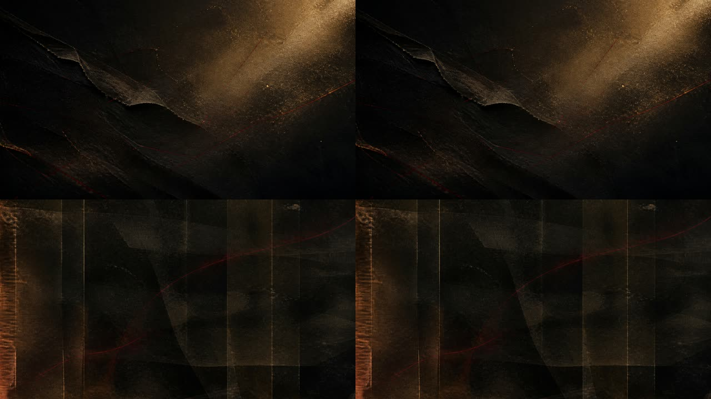

Archive awakening
Tests broad atmosphere, negative space, and whether amber light adds memory without becoming sentimental. Feedback: distinctive Red Thread material or generic prestige texture?
Non-shipping synthetic source material for Red Thread. The visual work is intentionally abstract and makes no claim to depict a person, match, ground, crowd, or historical event. Review for future usefulness, not historical accuracy.
Tests broad atmosphere, negative space, and whether amber light adds memory without becoming sentimental. Feedback: distinctive Red Thread material or generic prestige texture?

Tests the most literal tactile treatment of the thread without depicting history. Feedback: evocative physical metaphor or too much like craft/sewing?

Tests a quieter archival/emulsion language intended for parallax and transitions. Feedback: useful depth or visually too subdued?

Top: archive drift. Bottom: emulsion breathe. Both are six-second closed loops. Feedback: which direction deserves playback review and refinement?
A tactile transition between image, data, and receipt. Does it read as one physical gesture without becoming a whoosh or logo?
Quiet punctuation for a verified-stat reveal. Does it feel precise and human without sounding like an app notification?
Abstract tension that is explicitly not match audio. Does the pressure build without clock, heartbeat, trailer, or horror clichés?